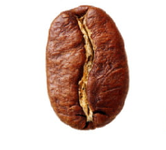
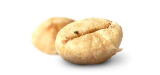

Robusta
Origen del Cafe
El árbol del café procede del norte de Etiopía (antes llamada Abisinia), en el oriente de África.
El cafeto es probablemente originario de la provincia de Kaffa, en Etiopía, pero la cuestión no está resuelta completamente. Crece en los bosques altos del suroeste de Etiopía, de 1300 a 2000 metros de altitud.
El cafeto es un arbusto de 10 a 12 metros que crece espontáneamente.
Una leyenda muy difundida sobre el origen del café es la de un pastor de Abisinia,
llamado Kaldi, que observó el efecto tonificante que unos pequeños frutos rojos de unos arbustos habían tenido sobre las cabras que lo habían consumido, efecto comprobado por él mismo al renovarse sus energías.
Tipos de Grano
Al igual que con el vino, elegir el grano correcto depende de su paleta.
Eso es porque los granos de café tienen diferentes características de sabor según la parte del mundo en que se cultiven.
Altitud, temperatura y suelo, incluso la cosecha, también desempeñan un papel importante.
Mientras tostar los granos de café produce aún más notas y matices de sabor.
Al igual que con el vino, elegir el grano correcto depende de su paleta. Eso es porque los granos de café tienen diferentes características de sabor según la parte del mundo en que se cultiven.
Altitud, temperatura y suelo, incluso la cosecha, también desempeñan un papel importante. Mientras tostar los granos de café produce aún más notas y matices de sabor.
Cuando se trata del café en la taza, solo hay dos tipos de grano que importan: Arábica y Robusta.

Arabicá
El champán del café, los granos Arábica tienen una espectacular riqueza aromática,
lo que produce un sabor suave y profundo al mismo tiempo.

Robusta
La cafeína reina del café, los granos Robusta, contienen aproximadamente el doble del estimulante que los granos Arábica.
Esto le da al café
un sabor fuerte y ligeramente amargo

Kopi Luwak
Para una experiencia gourmet poco común, pruebe los premiados granos extraídos del estiércol de civeta indonesia.
Esta criatura similar a una mangosta, se da festines con los frutos del café antes de ir al baño.
El sistema digestivo procesa los frutos otorgándole así, el sabor característico a los granos.
© 2020 Copyright:
Robusta coffe